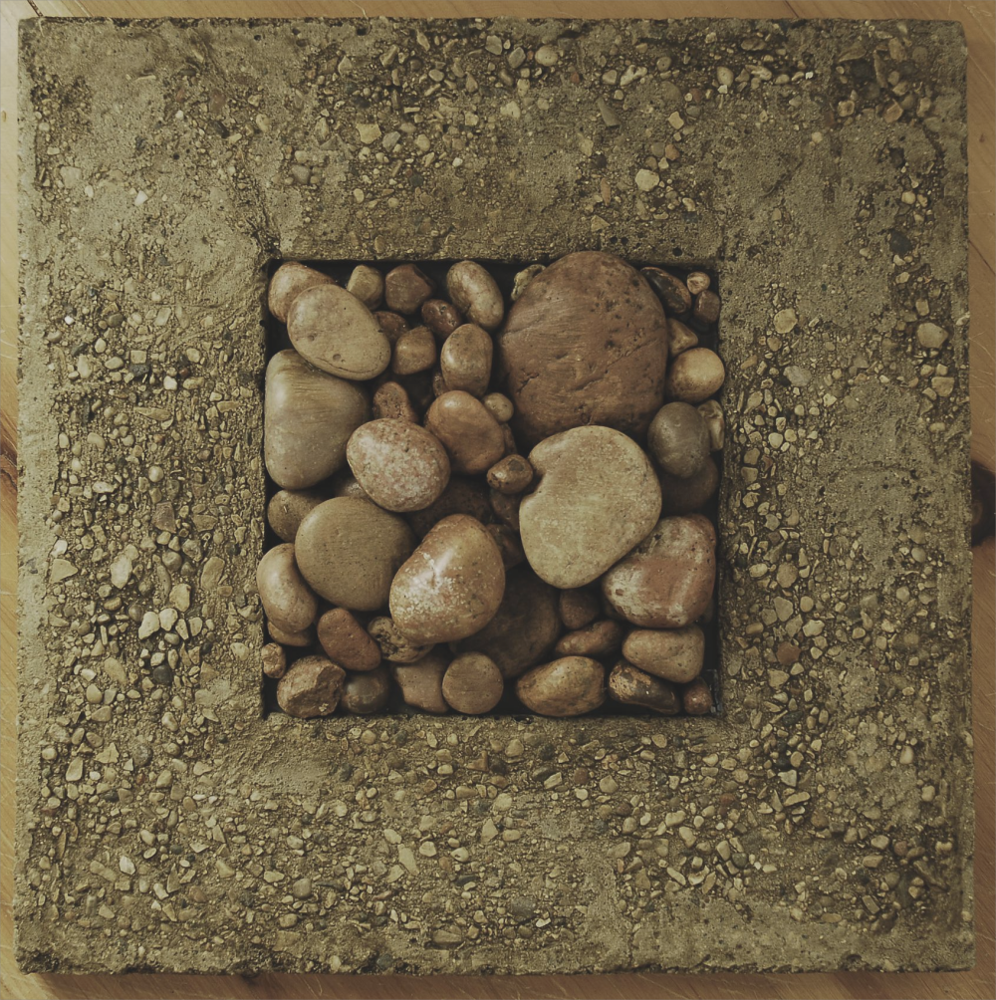

异食癖
异食癖（Pica），又称异嗜症、异食症、乱食症，是一种进食障碍。
主要表现于持续性地摄取非营养的物质，如泥土，肥皂或冰等，持续一个月以上，并且患者食用的物质被认为不适合其年龄应有的发展水平。
鲜为人注意
百度百科指异嗜症为婴儿和儿童在摄食过程中逐渐出现一种特殊癖好，对通常不应进食的异物，难以控制地咀嚼与吞食。发病年龄以幼儿为多，但学龄儿童亦可见到。
显然是较为片面的，维基百科中指出，异食癖在女性和儿童中更常见，特别是怀孕妇女、幼童及有发展障碍的人群，如自闭症患者，精神疾病诊断与统计手册（DSM-IV）中，异食癖被认为是一种精神疾病。
儿童异嗜症
好发于生长发育迟缓及心理障碍的儿童。
可能与脾胃功能失调、微量元素缺乏症、生存环境不利有关。
中医上认为异食癖是由于脾胃功能失调导致的；
西医上认为异食癖可能与患儿体内缺乏某种营养物质有关，如微量元素缺乏症、寄生虫症等；
精神病学上认为异食癖是一种心理失常的强迫行为，往往与生存环境不利有关，像弃婴，缺乏母爱，缺乏亲情，缺少关爱，或小儿出现行为起初是为了引起家长的关注，久而久之形成了不易解除的异食癖行为。
病因探究
源于感知、生理、文化和社会心理等多因素
异食癖可能是某些文化中习俗的一部分。美国佐治亚州的黑人女性食用高岭土的习俗在DSM-IV被列为文化依存症的一种。在非洲一些地区，食用高岭土也很常见。这种习惯对身体有一定好处，因为粘土可以吸收植物毒素，从而保护人体不受生物碱和单宁酸的危害。
心理因素：应激、情感困扰或某些精神障碍，如自闭症、精神分裂症、强迫症等，可能增加异食癖的风险。
环境因素：一些研究表明，生活在贫困或食物匮乏的环境中，可能会促使个体食用非食物物质。
重点在“预防”
预防异食癖的关键在于：
确保营养充足：保持均衡的饮食，确保摄入足够的铁、锌和其他关键营养素。
关注心理健康：及时应对应激和情感问题，避免发展为精神障碍。
教育和监督：教育儿童和成人识别和避免食用非食物物质，加强监护人对儿童的监督。